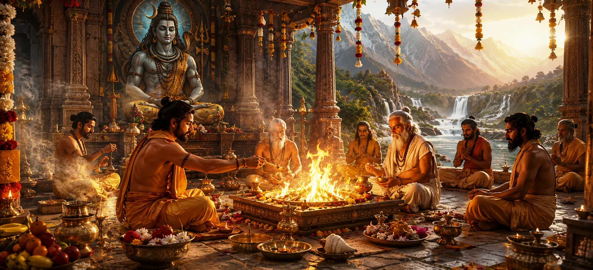

After teaching the principles of righteous living, the sages request Suta Muni to explain the sacred rituals that sustain spiritual life. They wish to understand the proper performance of Agni Yajña (fire sacrifice), Deva Yajña, Brahma Yajña, Guru worship and other sacred observances that purify the mind and please the Divine. Chapter 14 introduces these important rituals and explains their place in the spiritual journey.
The Shiva Purana teaches that rituals are not merely external ceremonies. When performed with devotion, purity and understanding, they become powerful means of connecting the individual soul with Lord Shiva and the cosmic order. Fire worship, in particular, is described as one of the oldest and most sacred forms of Vedic worship.
The sages respectfully approach Suta Muni and request a detailed explanation of the sacred rites practiced by seekers of Dharma. They ask him to explain the nature of Agni Yajña, Deva Yajña, Brahma Yajña, Guru Pūjā and the methods by which these practices bring spiritual merit and divine blessings.
Their questions reveal an important principle of the Shiva Purana: spiritual life requires both inner devotion and proper practice. Knowledge, worship and discipline must work together to elevate the devotee toward higher realization.
Offerings placed into the sacred fire become acts of worship.
Fire symbolizes purification of body, mind and intentions.
Agni serves as a sacred messenger carrying offerings to the gods.
Suta explains that any sacred offering made into the fire is known as Agni Yajña. Fire is regarded as a divine presence and a bridge between the human and celestial realms. Through the sacred flames, offerings are symbolically carried to the gods.
The chapter emphasizes that the true value of a sacrifice lies not in the material offered but in the devotion and sincerity behind it. A pure heart transforms even the simplest offering into a sacred act.
The Shiva Purana explains that the practice of Agni Yajña varies according to one's stage of life. For students (Brahmacharins), it involves offering sacred fuel sticks and observing spiritual disciplines. For householders, it becomes part of daily domestic worship through the maintenance of the sacred household fire.
For forest-dwellers and ascetics, the sacred fire is internalized. They perform a symbolic sacrifice through disciplined living, pure food and self-control. Thus, the chapter teaches that the spirit of sacrifice remains alive in every stage of spiritual life.
The gods represent the cosmic forces that sustain creation.
Devotees express gratitude through offerings and sacred chants.
Deva Yajña teaches respect for the divine order of the universe.
Suta explains that worship directed toward the gods is known as Deva Yajña. Through prayers, offerings and sacred rituals, devotees express gratitude to the divine powers that govern nature and support life. This practice cultivates humility and reverence.
The chapter teaches that by honoring the divine forces of creation, a person learns to live in harmony with the universe and develops deeper awareness of the sacredness present in all aspects of existence.
The Shiva Purana describes Brahma Yajña as the study, recitation and preservation of sacred knowledge. Reading the Vedas, Puranas and holy scriptures is considered a sacred offering because it keeps divine wisdom alive within society.
Knowledge is regarded as one of the greatest gifts bestowed by the Divine. Therefore, learning sacred teachings and sharing them with sincere seekers becomes a powerful form of worship and service.
The Guru guides seekers toward truth and realization.
A true Guru teaches through both words and actions.
The Guru helps remove ignorance and reveal divine knowledge.
The chapter highlights the importance of Guru Pūjā. A spiritual teacher is revered because he helps the disciple understand sacred truths and progress on the spiritual path. Respecting and serving the Guru is regarded as an act of great merit.
Suta explains that devotion to the Guru should be based on gratitude, humility and sincere learning. Through the guidance of a worthy teacher, spiritual knowledge becomes easier to understand and practice.
The Shiva Purana teaches that every sacrifice has an outer and inner dimension. While offerings may be placed into the sacred fire, the higher purpose of Yajña is the offering of ego, selfishness and negative tendencies into the fire of spiritual wisdom.
A person who practices self-control, charity, devotion and purity performs a continuous inner sacrifice. Such a life gradually transforms the heart and prepares the soul for higher realization and divine grace.
Worship and offerings dedicated to the gods.
Study and preservation of sacred knowledge.
Respect for teachers and service to living beings.
Suta explains that daily life should include acts of worship, learning, gratitude and service. These sacred obligations are collectively known as the great daily sacrifices. Through them, a devotee maintains harmony with the Divine, society, ancestors and all living beings.
The chapter teaches that spiritual growth is not limited to temples or sacred ceremonies. Every day provides opportunities to perform sacred duties and cultivate divine awareness.
Fire consumes what is offered and transforms it into a subtler form. For this reason, the sacred fire represents spiritual transformation. Just as wood becomes flame and ash, ignorance can be transformed into wisdom through devotion and discipline.
The sages learn that the true purpose of fire worship is not merely ritual performance but inner purification. Every offering symbolizes the surrender of limitations and the awakening of higher consciousness.
Mantras carry spiritual vibrations and sacred meaning.
Recitation helps concentrate the mind on the Divine.
Sacred sounds purify thoughts and intentions.
The Shiva Purana emphasizes that sacred rituals should be accompanied by the chanting of appropriate mantras. These divine sounds invoke spiritual energy and help establish a deeper connection between the devotee and the Divine.
When recited with faith and concentration, mantras purify the mind and create an atmosphere of holiness. Thus, they become an essential component of both ritual worship and personal spiritual practice.
Suta reminds the sages that rituals performed without devotion become empty formalities. The external act may be correct, but without faith, humility and sincerity, its spiritual value remains incomplete.
The greatest offering is a devoted heart. Whether one performs a grand fire sacrifice or offers a simple prayer, Lord Shiva accepts the worship when it is performed with pure intention and genuine devotion.
This chapter explains the sacred significance of rituals, sacrifices and fire worship in the spiritual life of a devotee. Suta Muni describes Agni Yajña, Deva Yajña, Brahma Yajña and Guru Pūjā, showing how these practices help purify the mind, strengthen devotion and maintain harmony with the Divine order.
The chapter further teaches that the true purpose of every ritual is inner transformation. When performed with devotion, humility and purity, sacred rites become a path to Lord Shiva's grace, spiritual wisdom and liberation.
In Vedic tradition, Agni is regarded as the sacred messenger who carries offerings from devotees to the gods.
Studying sacred scriptures is considered a form of Brahma Yajña and a powerful spiritual practice.
The Shiva Purana repeatedly emphasizes that sincere devotion is more important than the size or grandeur of any ritual.
Having learned the significance of sacred rituals, fire worship and devotional offerings, the sages now seek detailed guidance on the proper rules of worship. They wish to understand how a devotee should prepare, perform daily spiritual practices and worship Lord Shiva according to sacred tradition.
The next chapter reveals the rules governing worship, spiritual discipline, purity, sacred observances and the practices that help a devotee progress steadily on the path of Shiva.
"A sacred ritual becomes truly powerful when the fire burns not only on the altar, but also within the heart."
Agni Yajña is the sacred act of offering oblations into the ritual fire as an act of worship and devotion.
Fire symbolizes purity, transformation and the connection between the human and divine realms.
Brahma Yajña refers to the study, preservation and sharing of sacred knowledge.
The most important element is sincere devotion and purity of intention.
Continue your journey to explore the deeper mysteries of devotion and spiritual realization.